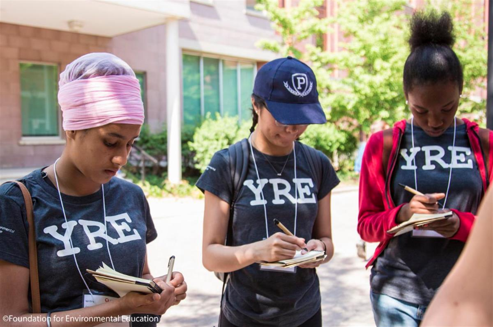

YRE gives students between 12 and 18 year old the opportunity to lean more about sustainable develpment issues and be heard through a journalism based on solutions. (Credit: Foundation for Environmental Education)
Young reporters take on climate action from their classrooms
by Kyra Dupont
Young Reporters for the Environment (YRE), a global programme that equips young people with journalism skills to be able tackle environmental issues, has been launched across six schools in Switzerland for the first time. We met some of the young apprentice journalists participating in the pilot project to find out which issues concerned or fascinated them the most and how they propose to change some of the planet’s bad habits.
Why it matters. Turning classrooms into newsrooms, YRE empowers young people between the ages of 12 and 18 to have their say on sustainable development issues impacting their local communities. Its main event is a yearly competition that allows students to put their newly acquired reporting and multimedia journalism skills to the test.
The project was created in 1994 by theFoundation for Environmental Education (FEE), the world’s largest environmental education organisation, which is represented in Switzerland bythe association J'aime ma Planète. It now counts around 360,000 students in 45 countries and is recognised by UNESCO and the United Nations Environment Programme (UNEP).
What’s happening Switzerland. Some 17 secondary classes from six different schools in the canton of Geneva, Vaud and Valais are participating in the programme, with students’ entries for the national competition submitted last month. In Geneva, the International School of Geneva, Collège Saint-Louis and Moser are taking part. The two successful Swiss winners - one between 12 and 14 years old and the other between 15 and 18 years old - will then be selected to join the international competition in May. The prize at the end of the race is the publication of their article international and on the online platform medium.com.
Coralie Wuilbeaux, head of the programme in Switzerland, said:
'We received 72 articles - nobody chose the photography section- and it was clear that what interested the students in French-speaking Switzerland were local issues. We received a lot of work related to Lake Geneva, especially plastic pollution. They were interested in air pollution due to transport, electric cars, local biodiversity, especially bees, energy consumption and renewable energy, food waste, melting glaciers, etc.'
Despite the restrictions linked to the pandemic, students were undaunted and were able to carry out research and conduct interviews with specialists ranging from Greenpeace and Oceaneye to thrift store managers and beekeepers, she said.
'This programme encourages them to think, to question their role in society and shows them the contradictions that can exist between what they should do and what they do,” explains Urban Furlan, director of strategy and development at J'aime ma Planète.
“It's an awareness-raising exercise that makes them more willing to get involved at their level because they learn to better understand the complexity of an issue. For us, it is very important to show young people that the subjects chosen are linked to the challenges of sustainable development on a global level, that they are complex and that there are not necessarily simple, ready-made solutions.”

What do the students say?
-
Most of the pupils interviewed were surprised by the extent of the pollution and environmental problems around them. Together with two friends from the 10th grade at Moser School, Nina Lobue, 14, submitted an article, No Lake B, on the pollution of Lake Geneva:
'Even though we all know that there is pollution, we were surprised by the size. We discovered that 50 tonnes of plastic are thrown into the lake every year and that most of the young people who party on its shores are indifferent to it while their waste kills the fauna and flora. And with Covid, the waves bring back 110 masks every five kilometres squared! According to two specialists from Oceaneye whom we interviewed, the lake contains 14 million particles of plastic (129 grammes per km2 on the surface) and is proportionally as polluted as the Mediterranean! '
Students of Moser were shocked by the amount of the pollution in Lake Leman. (Credit: ASL)
-
Learnings: Understanding environmental problems is no easy feat, with pupils confronted with themes and terms they did not previously know. Lucia Sievers, 14, author of It's Time to Walk the Talk, an article about Greening the Blue, the United Nations project to become climate neutral, said:
'There are a lot of terms we didn't know like “walk the talk”, which we had to research. We learned how to find longer-term solutions for ecology in business. And Carolina Ferreira, in charge of Green Jobs at the International Labour Organization, advised us three steps to change things on an individual level: 1- Measure your impact on the environment; 2- Understand how you can change; 3- Change. '
-
Walking the Talk: Young people admit that they would find it hard to do without Nutella, Oreo, Choco-Bons ('they’re too good'), or other treats with questionable environmental credentials, or forgetting to turn off the light, not being able to resist the call of fast fashion, asking their parents to drive them to school, not being able to do without screens. But as a result of this work, they were more aware of it and have promised themselves to shift towards more sustainable behaviours. They also acted as environmental ambassadors in their families. Isaline Juvet, 13, in 11th grade at Saint Louis, and author with Raphaël Heurtier of Our mountains will never be the same, explained that she was particularly marked by a remark made by Luc Moreau, a glaciologist they interviewed for the story:
'If we think that we as human beings are not going to change anything about global warming, then in an avalanche, who among the billions of flakes feels responsible for the avalanche? '
-
Climate anxiety: In researching today’s escalating climate emergencies, particularly in the context of a pandemic, some students admitted they felt a certain anxiety. Raphaël, one of the participants, said:
'There are more and more humans on the planet and the Earth is shrinking. I wonder how we will manage to live with 15 billion people and thousands of square kilometres less? I'm worried for future generations...'
And Isaline:
'New problems are being created and are accelerating. There are so many worrying issues that affect more and more people. There are people who make no effort. We can take action. '
Lessons for the future. Faced with the complexity of certain topics and the choice of controversial subjects such as 5G or pollution, J’aime ma Planète said next year it plans to focus on discussing information sources and tools that will allow students to protect themselves against fake news and disinformation.
'It is important that they understand that there is a lot of false information circulating, manipulation by lobbies defending their interests, false data and propaganda. We need to teach young people to develop a critical mind by showing them how to get the right information, where to look for it and avoid green washing,' explains Furlan.